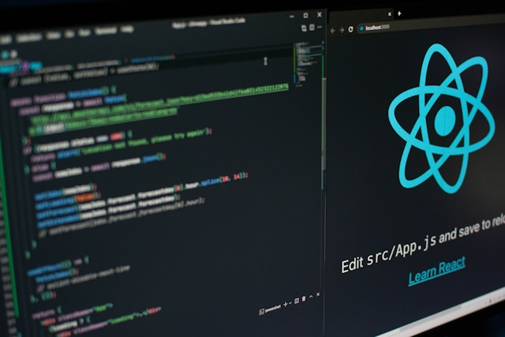

My Projects

Created a web blogger using the MERN stack, compiled an API and successfully presented it

Managing the contents of the database using the CRUD method with MySQL and Docker as tools.

Some quick example text to build on the card title and make up the bulk of the card's content.